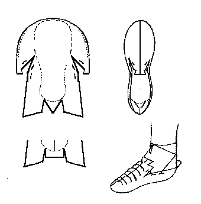

Irish Slipper (c.700-900)
"Lucas, Type 2"
Based on a shoe found in Ballymacomb, County Derry. This center seam type of shoe is made generally of a thin leather, such as pig, deer, sheep, goat, horse, ox or even calfskin. Thread is generally of gut or sinew, with thonging for the heel. There are a number of decorative motives that are found incised into the surface. Note that when it is made, the front forms a large half circle over the front of the foot, and gradually develops into a wrinkled, folded mass that conforms to the shape of the foot.
This design is based on a description found in Lucas and Hald.
Return to
[Index] or
[Next]
Footwear of the Middle Ages - Historical Shoe Designs/Number 2, by I. Marc Carlson. Copyright 1996, 1998
This page is given for the free exchange of information, provided the Author's Name is included in all future revisions, and no money change hands, other than as expressed in the Copyright Page.